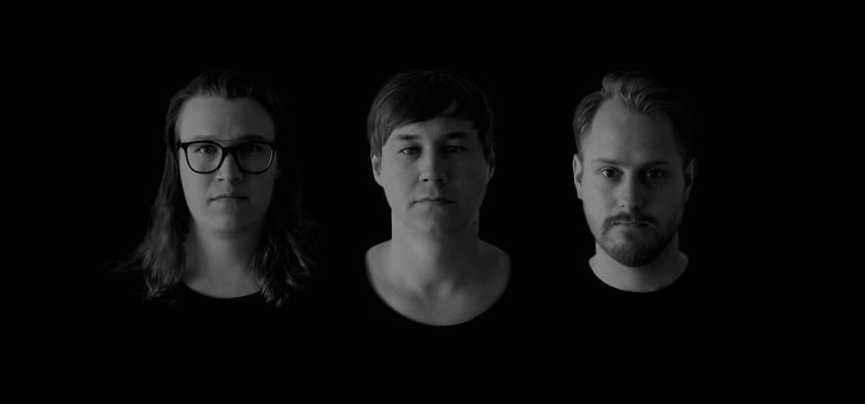

Biography
Oh Hiroshima is a post-rock band from Kristinehamn, Sweden, formed in 2007 by Leif Eliasson and Jakob Hemström. Two friends who met in high school and formed a close friendship. What started off as a solo project became an output for the two of them to create and experiment with the music they loved.
With the release of 'Empty Places Full of Memories' in 2009, Jakob's younger brother Oskar joined the band to record bass. As a three-piece, they recorded the EP 'Tomorrow' in 2010 and the bands debut album 'Resistance is Futile' followed in 2011. Along with the album release Simon Axelsson was recruited to play bass and Oskar switched to drums in order for the band to become a full-fledged live act.
During 2014 Oh Hiroshima entered the studio once again. This time deciding to let someone from outside the band assume the task of recording and mixing. After spending some time to finish song writing the band resumed recordings in early 2015. 'In Silence We Yearn' was released the 6th of November 2015.